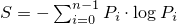

A random_device uniform random bit generator produces non-deterministic random numbers.
If implementation limitations prevent generating non-deterministic random numbers, the implementation may employ a random number engine.
class random_device{
public:
// types
using result_type = unsigned int;
// generator characteristics
static constexpr result_type min() { return numeric_limits<result_type>::min(); }
static constexpr result_type max() { return numeric_limits<result_type>::max(); }
// constructors
explicit random_device(const string& token = implementation-defined);
// generating functions
result_type operator()();
// property functions
double entropy() const noexcept;
// no copy functions
random_device(const random_device& ) = delete;
void operator=(const random_device& ) = delete;
};
explicit random_device(const string& token = implementation-defined);
Effects: Constructs a random_device non-deterministic uniform random bit generator object. The semantics and default value of the token parameter are implementation-defined. 274
Throws: A value of an implementation-defined type derived from exception if the random_device could not be initialized.
double entropy() const noexcept;
Returns: If the implementation employs a random number engine, returns 0.0. Otherwise, returns an entropy estimate275 for the random numbers returned by operator(), in the range min() to log2( max()+1).
Returns: A non-deterministic random value, uniformly distributed between min() and max(), inclusive. It is implementation-defined how these values are generated.
Throws: A value of an implementation-defined type derived from exception if a random number could not be obtained.
The parameter is intended to allow an implementation to differentiate between different sources of randomness.
If a device has n states
whose respective probabilities are
P0, …, Pn-1 ,
the device entropy S is defined as
.